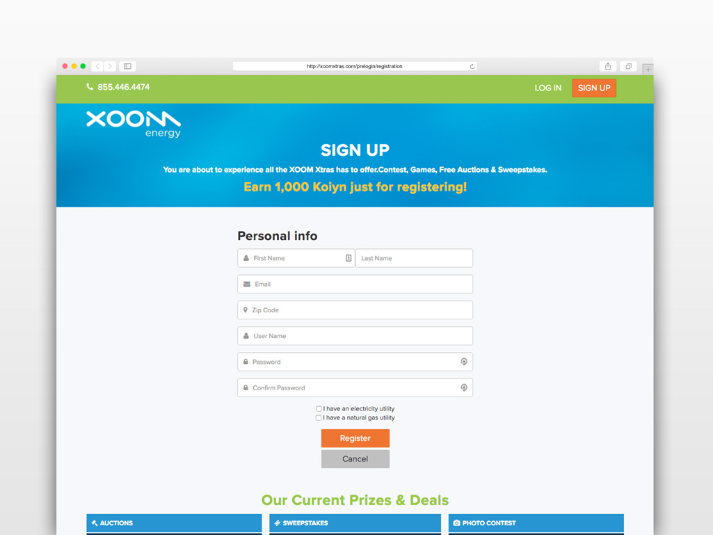

<div class="site-content">
    <div class="container">
        <h1 class="page-title">{{ page.title }}</h1>
        <p class="header-link"><a href="http://xoomxtras.com/" target="_blank">View Website &#8594;</a></p>
        <div class="info-content text-emphasis">
            <p>Web redesign to move the XOOM Xtras site to a more interactive and multimedia centered experience that included both daily games and auctions. The main issue our team faced was to provide a sleek and fun look in a harmonic interface design. </p>
        </div>
        
        <div class="row">
            <div class="col primary">
                <h2 class="page-subtitle">My Role</h2>
                <p>Sole front-end developer on the XOOM Energy redesign, working alongside a small team of back-end developers and talented Augeo designers. I was integral to the development process throughout the project and was lead developer for internal development.</p>
            </div>
            <div class="col secondary">
                <h2 class="page-subtitle">Technologies</h2>
                <p>We used Bootstrap as a foundation primarily to leverage its grid system. Site pages are built with the TWIG template engine. This allowed us to break pages down into distinct content modules for better organization. </p>
            </div>
        </div>
    </div>
</div>
